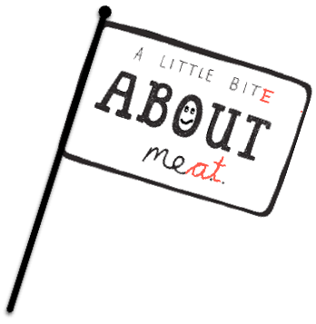

Born: 10 minues ago
Address: 1234 Burger Street
City: Burger Town
Phone: 123-456-7890
Email:mr.burger@cheesy.com

My goal is to provide the best food for my customers and have a good relationship with my customers.
He graduated with honors from the "Patty & Bun" program, where he mastered the art of staying juicy, even after grilling.
Specialized in the study of the perfect grass for the most refined flavor, taught by some of the best farms.
An intensive course in combining the right ingredients (lettuce, tomato, sauce) without ever losing perfection.
Various training in confidently entering the plate and dominating every meal.
Over a day in the kitchen, winning the hearts of hungry diners time and time again.
Unmatched experience on the grill, knowing exactly when to flip for that perfect, juicy texture.
a day spent refining his layers, from the patty to the crispy veggies, always in perfect balance.
A day of experimenting with sauces, finding the perfect balance of sweet, spicy, and creamy for the ultimate flavor explosion.
Sometimes a little too much for some customers, but most people love it.
Adds a surprising crunch, making some diners laugh, but always well-received.
He is the result of hours of care, love, and dedication. The grass I have grazed, the water drunk, the sun that's shone upon me all of it has contributed to the exceptional quality you represent today.
You are not just meat, oh no, you are the pinnacle of my craft. You, Mr. H. Burger, will make the taste buds of many rejoice.'"
'Mr. H. Burger', 'what an honor it is to bring you to life. Your juicy beef patty, so full of flavor, has been perfectly paired with fresh lettuce, crisp tomato, and the soft, fragrant buns that I’ve kneaded with care.
Every slice of pickle has been placed with precision, each drop of mayonnaise applied with attention. This is no mere meal, oh no, this is a masterpiece of culinary refinement. You, sir, will fill the mouth of every diner with pure joy.'"
"Mr. H. Burger, you are not just a meal, you are the embodiment of perfection. The golden-brown crust of the bun, the juicy meat that glistens softly, exuding the scent of freshly baked delight, the crisp lettuce offering a vibrant green, and the tomato, bright and full of flavor... each layer speaks to the soul.
How has one created such harmony? I am witnessing a masterpiece, a symphony of flavors, and now I finally have the honor of tasting it."